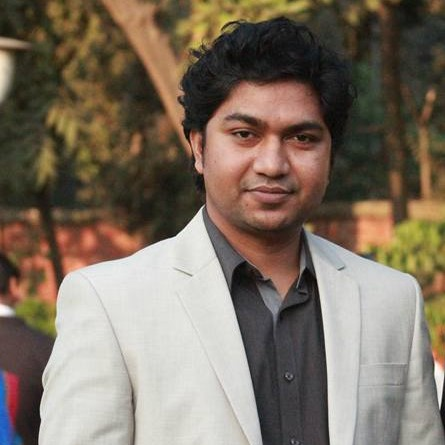

Bangla Literature, Rabindranath Tagore, Kazi Nazrul Islam
Literature · Research · Teaching
Jashim Uddin
জসিম উদ্দিন
Assistant Professor
Department of Bangla, University of Dhaka

Teaching and researching Bengali literature, with a focus on Rabindranath Tagore and Kazi Nazrul Islam.
Explore publicationsAbout
01An Assistant Professor in the Department of Bangla at the University of Dhaka, where he completed his bachelor’s and master’s degrees in Bengali. His research interests include Bengali literature, Rabindranath Tagore and Kazi Nazrul Islam. He also publishes under the name Tanim Jashim.
Research & teaching
02Masters
Masters
UGC Research Project
Publications
039 publications listed in the University profile
Book chapters
Tofazzal Hossain (1935–2015)
Read moreOriginal citation (Bengali)
তানিম জসিম (মো. জসিম উদ্দিন) "তোফাজ্জল হোসেন (১৯৩৫-২০১৫)."
স্মরণীয় ব্যক্তিত্ব. বাংলা বিভাগ ও ঢাকা বিশ্ববিদ্যালয় বাংলা অ্যালামনাই ঢাকা: বাংলা বিভাগ, ঢাকা বিশ্ববিদ্যালয়, 2023 491-495 .
Language Studies
Read moreOriginal citation (Bengali)
তারিক মনজুর and জসিম উদ্দিন "ভাষাচর্চা."
শতবর্ষে বাংলা বিভাগ : বাংলাদেশের জাতীয়তাবাদী সাংস্কৃতিক-রাজনৈতিক বিনির্মাণ. বাংলা বিভাগ ঢাকা: বাংলা বিভাগ, ঢাকা বিশ্ববিদ্যালয়, 2022 131-155 .
Introduction to the Short Stories of Manik Bandopadhyay
Original citation (Bengali)
তানিম জসিম (মো. জসিম উদ্দিন) "মানিক বন্দ্যোপাধ্যায়ের ছোটগল্পের ভূমিকা."
শ্রেষ্ঠ গল্প. মানিক বন্দ্যোপাধ্যায় ঢাকা: ভাষাপ্রকাশ, 2016 7-21 .
Journal articles
The Nature of Kazi Nazrul Islam’s “National Education”
DOIOriginal citation (Bengali)
Md. Jashim Uddin
: কাজী নজরুল ইসলামের ‘জাতীয় শিক্ষা’র স্বরূপ,
সাহিত্য পত্রিকা , ISSN: 0558-1583 , vol.60 , no.1-2 বাংলা বিভাগ, ঢাকা বিশ্ববিদ্যালয় , pp.57-71 , 2025
.
Saogat and Nazrul: Connections
Original citation (Bengali)
মো. জসিম উদ্দিন
: সওগাত ও নজরুল : সম্পর্কসূত্র,
কবি নজরুল ইনস্টিটিউট পত্রিকা , ISSN: 2518-5659 , no.43 কবি নজরুল ইনস্টিটিউট , pp.27-38 , 2024
.
Al Mahmud’s Upamahadesh: An Autobiographical Artistic Account of the Liberation War
DOIRead moreOriginal citation (Bengali)
মো. জসিম উদ্দিন
: আল মাহমুদের উপমহাদেশ : মুক্তিযুদ্ধাশ্রয়ী আত্মজৈবনিক শিল্পভাষ্য,
সাহিত্য পত্রিকা , ISSN: 0558-1583 , vol.55 , no.3 বাংলা বিভাগ, ঢাকা বিশ্ববিদ্যালয় , pp.195 - 210 , 2018
.
Tagore’s Japan-Jatri: A Portrayal of Japanese Society, Literature and Culture
DOIRead moreOriginal citation (Bengali)
মো. জসিম উদ্দিন
: রবীন্দ্রনাথের জাপান-যাত্রী : জাপানের সমাজ-সাহিত্য-সংস্কৃতির রূপায়ণ,
সাহিত্য পত্রিকা , ISSN: 0558-1583 , vol.55 , no.1 বাংলা বিভাগ, ঢাকা বিশ্ববিদ্যালয় , pp.123 - 140 , 2017
.
The Short Stories of Hasan Hafizur Rahman: Reflections of Life and Time
Original citation (Bengali)
মো. জসিম উদ্দিন
: হাসান হাফিজুর রহমানের ছোটগল্প : জীবন ও সময়ের প্রতিবিম্ব,
কলা অনুষদ পত্রিকা , ISSN: 1994-8905 , vol.7 , no.9 কলা অনুষদ, ঢাকা বিশ্ববিদ্যালয় , pp.167 - 182 , 2015
.
Tarashankar’s Short Stories: Narratives of Marginalised People
Original citation (Bengali)
মো. জসিম উদ্দিন
: তারাশঙ্করের ছোটগল্প : প্রান্তজনের কতকতা,
সাহিত্য গবেষণাপত্র , ISSN: 2410-1710 , vol.1 , no.1 বাংলা বিভাগ, পাবনা বিজ্ঞান ও প্রযুক্তি বিশ্ববিদ্যালয় , pp.231 - 243 , 2014
.
No publications found.
Experience
04Provost (Acting)
House Tutor
Assistant Professor
Assistant House Tutor
Lecturer
Lecturer
Education
05Masters
Bachelor
Awards & honours
06Provost Award, Kabi Jasimuddin Hall
Akshay Kumar Sen Sharma Gold Medal
Contact
08Phone
Office
Department of Bangla, Faculty of Arts
University of Dhaka, Dhaka 1000
Department extension: 6001